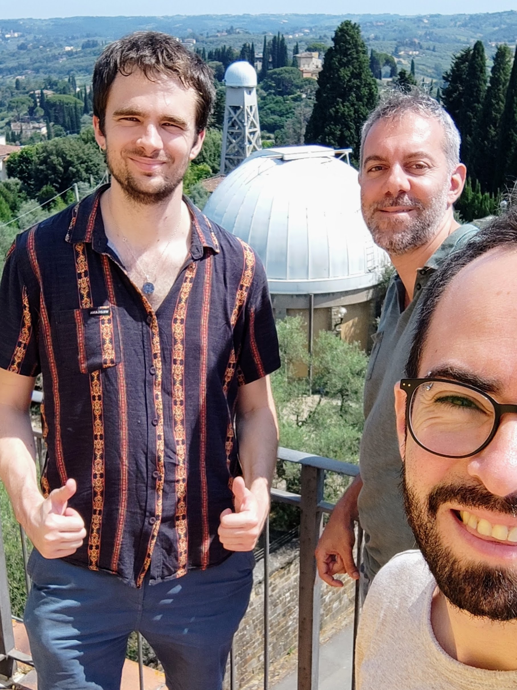

¿Alguna vez te has preguntado cómo se forman los sistemas planetarios como nuestro Sistema Solar? Gracias al telescopio espacial Gaia de la Agencia Espacial Europea (ESA), hoy contamos con una nueva y extraordinaria ventana para observar estos procesos en acción, revelando la dinámica oculta en los entornos polvorientos donde nacen planetas y estrellas.
En una impresionante composición de imágenes, se presentan 31 sistemas estelares jóvenes, observados con el radiotelescopio ALMA en longitudes de onda milimétricas. Estas observaciones muestran discos protoplanetarios en tonos naranja y púrpura, estructuras de gas y polvo que rodean estrellas recién formadas. Para fines comparativos, la imagen incluye también una reconstrucción de cómo se espera que haya sido nuestro propio Sistema Solar cuando tenía apenas un millón de años, con la órbita de Júpiter indicada en color cian (esquina inferior derecha).
Todos los sistemas observados están centrados en estrellas extremadamente jóvenes, que se formaron recientemente tras el colapso gravitacional de grandes nubes de gas y polvo. Durante este proceso, el material se aplana y da origen a discos protoplanetarios, los lugares donde se espera que el polvo y el gas remanente se agrupen progresivamente hasta formar planetas.

Collage de 31 sistemas estelares jóvenes observados con ALMA, con las posiciones predichas por Gaia para posibles compañeros (en cian). Crédito: ESO, ESA/Gaia/DPAC, M. Vioque et al.
Detectar planetas en estos entornos tempranos ha sido históricamente muy difícil, debido a la gran cantidad de material que los rodea. Sin embargo, Gaia ha cambiado este escenario. En 31 de un total de 98 sistemas jóvenes estudiados, el satélite detectó pequeños movimientos en las estrellas —un “bamboleo” gravitacional— que sugiere la presencia de compañeros invisibles a nuestros telescopios. En siete de estos casos, las señales son compatibles con objetos de masa planetaria; en otros ocho, con enanas marrones; mientras que los sistemas restantes probablemente albergan estrellas binarias.
Las posiciones predichas para las órbitas de estos compañeros aparecen marcadas en color cian en las imágenes. En el caso del Sistema Solar de referencia, se muestra también la órbita de Júpiter en ese mismo color.
Investigadores Miguel Vioque, Antonio Garufi y Sebastián Pérez reunidos en Florencia.
Este resultado marca la primera vez que la técnica astrométrica de Gaia se utiliza con éxito para detectar planetas y compañeros alrededor de estrellas que aún se están formando. El estudio fue liderado por Miguel Vioque (ESO, Alemania) y contó con la participación de investigadores del Núcleo Milenio sobre Exoplanetas Jóvenes y sus Lunas (YEMS), incluyendo a su investigador principal Sebastián Pérez (Universidad de Santiago de Chile, CIRAS), además de colaboradores externos como Antonio Garufi (INAF, Italia).
La naturaleza de todo el cielo y el gran alcance estadístico de Gaia permitieron analizar, por primera vez, muestras amplias de estrellas en formación, algo que no es posible con búsquedas tradicionales desde tierra, mucho más costosas y limitadas a pocos objetos por vez.
Estos descubrimientos abren la puerta a estudios de seguimiento con telescopios de nueva generación, como el James Webb Space Telescope (JWST), que permitirá explorar con mayor detalle las regiones internas de estos discos protoplanetarios. Además, con la próxima cuarta liberación de datos de Gaia, se espera que muchos más planetas ocultos salgan a la luz.
Este trabajo ha sido aceptado para publicación en Astronomy & Astrophysics bajo el título “Astrometric view of companions in the inner dust cavities of protoplanetary disks”, de M. Vioque et al. (acceso más abajo).
El equipo de investigación incluye científicos de Europa, Chile y otros países, y refuerza el rol de YEMS como un actor clave en el estudio de la formación temprana de sistemas planetarios, combinando observaciones de vanguardia, análisis astrométrico y colaboración internacional.
Comunicado de prensa de la European Space Agency (ESA):
“Gaia finds hints of planets in baby star systems”